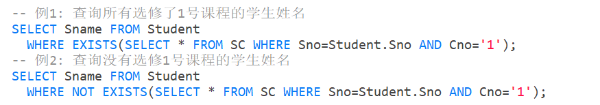

SQL概述
发展
结构化查询语言（Structured Query Language，SQL）是关系数据库的标准语言。

目前，没有一个数据库系统能够支持SQL标准的所有概念和特性。
特点
-
综合统一
集数据定义语言（DDL），数据操纵语言（DML），数据控制语言（DCL）功能于一体。
可以独立完成数据库生命周期中的全部活动。
用户数据库投入运行后，可根据需要随时逐步修改模式，不影响数据库的运行。
数据操作符统一。
-
高度非过程化
无须了解存取路径，存取路径的选择以及SQL的操作过程由系统自动完成。
-
面向集合的操作方式
非关系数据模型采用面向记录的操作方式，操作对象是一条记录。
SQL采用集合操作方式，操作对象，查找结果，一次插入、删除、更新操作的对象可以是元组的集合。
-
以同一种语法结构提供多种使用方式
SQL是独立的语言，能够独立地用于联机交互的使用方式。
SQL又是嵌入式语言，能够嵌入到高级语言（例如C，C++，Java）程序中，供程序员设计程序时使用。
-
语言简洁，易学易用
SQL功能极强，完成核心功能只用了9个动词。
基本概念
SQL支持关系数据库三级模式结构。
基本表：基本表是本身独立存在的表，一个关系就对应一个基本表，一个或多个基本表对应一个存储文件，一个表可以带若干索引。
存储文件：存储文件的逻辑结构组成了关系数据库的内模式；存储文件的物理结构对用户是隐蔽的。
视图：视图是从一个或几个基本表导出的表。它本身不独立存储在数据库中，即数据库中只存放视图的定义而不存放视图对应的数据。视图是一个虚表。用户可以在视图上再定义视图。
学生-课程数据库
学生表：Student(Sno,Sname,Ssex,Sage,Sdept)
课程表：Course(Cno,Cname,Cpno,Ccredit)
学生选课表：SC(Sno,Cno,Grade)
数据定义
SQL的数据定义功能：模式定义、表定义、视图和索引的定义。
现代关系数据库管理系统提供了一个层次化的数据库对象命名机制。
- 一个关系数据库管理系统的实例中可以建立多个数据库；
- 一个数据库中可以建立多个模式；
- 一个模式下通常包括多个表、视图和索引等数据库对象；
数据类型
SQL中域的概念用数据类型来实现。定义表的属性时需要指明其数据类型及长度。
选用哪种数据类型，一般从两方面考虑：
- 取值范围
- 要做哪些运算
模式的定义与删除
定义模式实际上定义了一个命名空间，在这个空间中可以定义该模式包含的数据库对象，例如基本表、视图、索引等。
在SQL中，模式定义语句：
CREATE SCHEMA <模式名> AUTHORIZATION <用户名>;::: tip
如果没有指定<模式名>，则<模式名>隐含为<用户名>
:::
用户可以在创建模式的同时在这个模式定义中进一步创建基本表、视图，定义授权。
CREATE SCHEMA <模式名> AUTHORIZATION <用户名>[<表定义子句>|<视图定义子句>|<授权定义子句>];例：为用户ZHANG创建了一个模式TEST，并且在其中定义一个表TAB1
CREATE SCHEMA TEST AUTHORIZATION ZHANG CREATE TABLE TAB1( COL1 SMALLINT, COL2 INT, COL3 CHAR(20), COL4 NUMERIC(10,3), COL5 DECIMAL(5,2) );
在SQL中，删除模式语句：
DROP SCHEMA <模式名> <CASCADE|RESTRICT>CASCADE和RESTRICT必须二选一。
-
CASCADE（级联）
删除模式的同时把该模式中所有的数据库对象全部删除。
-
RESTRICT（限制）
如果该模式中定义了下属的数据库对象（如表、视图等），则拒绝该删除语句的执行。仅当该模式中没有任何下属的对象时才能执行。
基本表的定义、删除与修改
定义表，格式如下：
CREATE TABLE <表名> ( <列名> <数据类型> [<列级完整性约束条件>]
[,<列名> <数据类型> [<列级完整性约束条件>]]
...
[,<表级完整性约束条件>]);- <表名>：所要定义的基本表的名字；
- <列名>：组成该表的各个属性（列）；
- <列级完整性约束条件>：涉及相应属性列的完整性约束条件；
- <表级完整性约束条件>：涉及一个或多个属性列的完整性约束条件；
删除表，格式如下：
DROP TABLE <表名> [RESTRICT| CASCADE];-
RESTRICT：删除表是有限制的。
欲删除的基本表不能被其他表的约束所引用，如果存在依赖该表的对象，则此表不能被删除。
-
CASCADE：删除该表没有限制。
在删除基本表的同时，相关的依赖对象一起删除。
默认是RESTRICT。
修改表，格式如下：
ALTER TABLE <表名>
[ ADD[COLUMN] <新列名> <数据类型> [完整性约束] ]
[ ADD <表级完整性约束>]
[ DROP [ COLUMN ] <列名> [CASCADE|RESTRICT] ]
[ DROP CONSTRAINT <完整性约束名> [RESTRICT|CASCADE] ]
[ ALTER COLUMN <列名> <数据类型> ] ;-
<表名>：要修改的基本表；
-
ADD子句：用于增加新列、新的列级完整性约束条件和新的表级完整性约束条件；
-
DROP COLUMN子句：用于删除表中的列；
如果指定了CASCADE短语，则自动删除引用了该列的其他对象；
如果指定了RESTRICT短语，则如果该列被其他对象引用，关系数据库管理系统将拒绝删除该列；
-
DROP CONSTRAINT子句：用于删除指定的完整性约束条件；
-
ALTER COLUMN子句：用于修改原有的列定义，包括修改列名和数据类型；
::: tip
不管基本表中原来是否已有数据，新增加的列一律为空值 。
:::
模式与表
每一个基本表都属于某一个模式，一个模式包含多个基本表。
定义基本表所属模式一般有三种方法：
-
在表名中明显地给出模式名
CREATE TABLE "S-T".Student(......); -- 模式名为 S-T -
在创建模式语句中同时创建表
-
设置所属的模式
创建基本表（其他数据库对象也一样）时，若没有指定模式，系统根据搜索路径来确定该对象所属的模式。
::: info
显示当前的搜索路径：SHOW search_path;
设置搜索路径：SET search_path TO "S-T", PUBLI;
但以上两条命令是用于在 PostgreSQL 中的，在 MySQL 中，没有像 PostgreSQL 中的模式搜索路径概念。
MySQL 主要依赖于当前所选的数据库来确定表和对象的搜索范围，而不是像 PostgreSQL 那样使用模式搜索路径。在 MySQL 中，会话使用的数据库（也就是当前默认数据库）会决定在查询时默认使用的模式。
在 MySQL 中，
- 查看当前会话所使用的默认数据库：
SELECT DATABASE(); - 查看当前数据库中所有的模式（也被称为数据库）：
SHOW DATABASES;
:::
索引的建立与删除
数据库索引是一种数据结构，用于提高数据库表中数据的检索速度。索引类似于书中的目录，可以快速指导数据库引擎到达包含特定数据的行，而无需扫描整个表。它们是数据库性能优化的关键组成部分。
建立索引的目的是加快查询速度。
关系数据库管理系统中常见索引：
- 顺序文件上的索引
- B+树索引
- 散列（hash）索引
- 位图索引
索引一般是由数据库管理员或表的属主（即建立表的人）建立的。维护索引则是由关系数据库管理系统自动完成。
关系数据库管理系统自动选择合适的索引作为存取路径，用户不能显式地选择索引。
建立索引，格式：
CREATE [UNIQUE] [CLUSTERED] INDEX <索引名> ON <表名> (<列名>[<次序>][,<列名>[<次序>]]...);- 索引：可以建立在该表的一列或多列上，各列名之间用逗号分隔；
- <表名>：要建索引的基本表的名字；
- <次序>：指定索引值的排列次序，升序：ASC，降序：DESC，默认值：ASC；
- UNIQUE：此索引的每一个索引值只对应唯一的数据记录
- CLUSTER：表示要建立的索引是聚簇索引
::: warning
上面的格式是在 Microsoft SQL Server 的 T-SQL 中使用的语法。
:::
::: info 聚簇索引
聚簇索引（Clustered Index）是一种特殊类型的索引，其顺序与表的物理顺序一致。
这意味着表的数据行实际上按照聚簇索引的顺序进行存储，而不是存储在表的其他位置。因此，聚簇索引决定了表的物理排序方式。
InnoDB是MySQL的默认存储引擎之一，它支持聚簇索引。因此当你在MYSQL数据库的表上定义主键时，InnoDB会默认使用主键作为聚簇索引。如果没有定义主键，InnoDB会选择第一个唯一非空索引作为聚簇索引。
:::
::: tip MYSQL建立索引
在MYSQL中，建立索引的格式是：
CREATE [UNIQUE] [FULLTEXT|SPATIAL] INDEX <索引名> ON <表名> (<列名> [(length)] [ASC | DESC], ...);-
length: 对于文本列，可以指定索引的前缀长度。 -
ASC | DESC: 可选项，表示升序或降序排序，默认是升序。 -
FULLTEXT|SPATIAL是用于创建特殊类型索引的关键字。FULLTEXT索引用于全文搜索。它允许你执行针对文本数据的全文搜索，而不仅仅是简单的字符串匹配。这对于需要在大量文本数据中进行自然语言搜索的场景非常有用。SPATIAL索引用于处理空间数据类型，例如地理信息系统中的地理坐标。它允许你执行空间查询，如范围搜索、邻近搜索等。
:::
修改索引，格式：
ALTER INDEX <旧索引名> RENAME TO <新索引名>删除索引，格式：
数据字典
数据字典是关系数据库管理系统内部的一组系统表，它记录了数据库中所有定义信息：
- 关系模式定义
- 视图定义
- 索引定义
- 完整性约束定义
- 各类用户对数据库的操作权限
- 统计信息等
关系数据库管理系统在执行SQL的数据定义语句时，实际上就是在更新数据字典表中的相应信息。
数据查询
查询的一般格式为：
SELECT [ALL|DISTINCT] <目标列表达式>[,<目标列表达式>]...
FROM <表名或视图名>[,<表名或视图名> ]...| (SELECT 语句) [AS]<别名>
[ WHERE <条件表达式> ]
[ GROUP BY <列名1> [ HAVING <条件表达式> ] ]
[ ORDER BY <列名2> [ ASC|DESC ] ];- SELECT子句：指定要显示的属性列；
- FROM子句：指定查询对象（基本表或视图）；
- WHERE子句：指定查询条件；
- GROUP BY子句：对查询结果按指定列的值分组，该属性列值相等的元组为一个组。通常会在每组中作用聚集函数；
- HAVING短语：只有满足指定条件的组才予以输出；
- ORDER BY子句：对查询结果表按指定列值的升序或降序排序；
单表查询
单表查询是查询仅涉及一个表的查询。
选择表中的若干列
-
查询指定列
在SELECT子句的<目标列表达式>中指定要查询的属性列。
-
查询全部列
可以在SELECT关键字后面列出所有列名，或者将<目标列表达式>指定为
*。 -
查询经过计算的值
SELECT子句的<目标列表达式>不仅可以为表中的属性列，也可以是算术表达式，字符串常量，函数。

选择表中的若干元组
-
消除取值重复的行
如果想去掉结果表中的重复行，必须指定
DISTINCT，如果没有指定DISTINCT关键词，则默认为ALL。 -
查询满足条件的元组
-
比较大小
-
确定范围
-
确定集合
-
字符匹配
<匹配串>可以是一个完整的字符串，也可以含有通配符
%和_。% （百分号）：代表任意长度（长度可以为0）的字符串。例如a%b表示以a开头，以b结尾的任意长度的字符串。
_ （下横线）：代表任意单个字符。例如a_b表示以a开头，以b结尾的长度为3的任意字符串。
如果要查询的字符串本身就含有
%或者_，这时就需要使用ESCAPE ‘<换码字符>’短语对通配符进行转义。ESCAPE ’＼’ 表示’＼‘为换码字符。 -
涉及空值的查询
“IS”不能用“=”代替
-
多重条件查询
AND和OR来连接多个查询条件，AND的优先级高于OR，但可以用括号改变优先级。
-
ORDER BY子句
ORDER BY子句可以对查询结果按一个或多个属性列进行排序。
::: tip
对于空值，排序时显示的次序由具体系统实现来决定。
:::
聚集函数
为了方便用户，增强检索功能，sql提供了许多聚集函数：
COUNT(*)：统计元组个数COUNT( [DISTINCT|ALL] <列名>)：统计一列中值的个数SUM( [DISTINCT|ALL] <列名>)：计算一列值的总和（此列必须为数值型）AVG( [DISTINCT|ALL] <列名>)：计算一列值的平均值（此列必须为数值型）MAX( [DISTINCT|ALL] <列名>)：求一列中的最大值MIN( [DISTINCT|ALL] <列名>)：求一列中的最小值
当聚焦函数遇到空值时，除COUNT(*)外，都跳过空值，只处理非空值。
::: tip
聚焦函数只能用于SELECT子句和GROUP BY中的HAVING子句。
:::
GROUP BY子句
GROUP BY子句将查询结果按某一列或多列的值分组，值相等的为一组。
对查询结果分组的目的是为了细化聚集函数的作用对象。如果未对查询结果分组，聚集函数将作用于整个查询结果；对查询结果分组后，聚集函数将分别作用于每个组。
::: tip HAVING短语与WHERE子句的区别
- 作用对象不同。
- WHERE子句作用于基表或视图，从中选择满足条件的元组。
- HAVING短语作用于组，从中选择满足条件的组。
:::
连接查询
同时涉及两个以上的表的查询称为连接查询。
连接查询的WHERE子句中用来连接两个表的条件称为连接条件或连接谓词，一般格式为：
[<表名1>.]<列名1> <比较运算符> [<表名2>.]<列名2>
[<表名1>.]<列名1> BETWEEN[<表名2>.]<列名2> AND [<表名2>.]<列名3>连接谓词中的列名称为连接字段。连接条件中的各连接字段类型必须是可比的，但名字不必相同。
等值与非等值连接查询
连接运算符为=时，称为等值连接；不为=则称为非等值连接。
::: tip
在上面例子中，SELECT子句和WHERE子句中的属性名前都加上了表名前缀，这是为了避免混淆。
如果属性名在参加连接的歌表中是唯一的，则可以省略表名前缀。
:::
上面查询例子的几种可能的执行过程：
-
嵌套循环法
首先在表1中找到第一个元组，然后从头开始扫描表2，逐一查找满足连接件的元组，找到后就将表1中的第一个元组与该元组拼接起来，形成结果表中一个元组。
表2全部查找完后，再找表1中第二个元组，然后再从头开始扫描表2，逐一查找满足连接条件的元组，找到后就将表1中的第二个元组与该元组拼接起来，形成结果表中一个元组。
重复上述操作，直到表1中的全部元组都处理完毕。
-
排序合并法
常用于
=连接。首先按连接属性对表1和表2排序。
对表1的第一个元组，从头开始扫描表2，顺序查找满足连接条件的元组，找到后就将表1中的第一个元组与该元组拼接起来，形成结果表中一个元组。当遇到表2中第一条大于表1连接字段值的元组时，对表2的查询不再继续。
找到表1的第二条元组，然后从刚才的中断点处继续顺序扫描表2，查找满足连接条件的元组，找到后就将表1中的第一个元组与该元组拼接起来，形成结果表中一个元组。直接遇到表2中大于表1连接字段值的元组时，对表2的查询不再继续。
重复上述操作，直到表1或表2中的全部元组都处理完毕为止。
-
索引连接
对表2按连接字段建立索引。
对表1中的每个元组，依次根据其连接字段值查询表2的索引，从中找到满足条件的元组，找到后就将表1中的第一个元组与该元组拼接起来，形成结果表中一个元组。
若在等值连接中把目标中重复的属性列去掉则为自然连接。（例如上面例子的查询结果中学号重复了）
一条SQL语句可以同时完成选择和连接查询，这时WHERE子句是由连接谓词和选择谓词组成的复合条件。
自身连接
连接操作不仅可以在两个表之间进行，也可以是一个表与其自己进行连接，成为表的自身连接。
需要给表起别名以示区别。
由于所有属性名都是同名属性，因此必须使用别名前缀。
外连接
外连接与普通连接的区别
- 普通连接操作只输出满足连接条件的元组
- 外连接操作以指定表为连接主体，将主体表中不满足连接条件的元组一并输出
左外连接：列出左边关系中所有的元组；
右外连接：列出右边关系中所有的元组；
多表连接
两个以上的表进行连接称为多表连接。
嵌套查询
一个SELECT-FROM-WHERE语句称为一个查询块。
将一个查询块嵌套在另一个查询块的WHERE子句或HAVING短语的条件中的查询称为嵌套查询。
SQL语言允许多层嵌套查询，即一个子查询中还可以嵌套其他子查询。
在子查询中不能使用ORDER BY子句。
-
不相关子查询：子查询的查询条件不依赖于父查询
由里向外逐层处理。即每个子查询在上一级查询处理之前求解，子查询的结果用于建立其父查询的查找条件。
-
相关子查询：查询的查询条件依赖于父查询
首先取外层查询中表的第一个元组，根据它与内层查询相关的属性值处理内层查询，若WHERE子句返回值为真，则取此元组放入结果表，然后再取外层表的下一个元组。
重复这一过程，直至外层表全部检查完为止。
带有IN谓词的子查询
带有比较运算符的子查询
带有比较运算符的子查询是指父查询与子查询之间用比较运算符进行连接。
当能确切知道内层查询返回单值时，可用比较运算符。
带有ANY（SOME）或ALL谓词的子查询
子查询返回单值的时候可以用比较运算符，但返回多值时要用ANY（有的系统是SOME）或ALL。
- > ANY：大于子查询结果中的某个值
- > ALL：大于子查询结果中的所有值
- < ANY：小于子查询结果中的某个值
- < ALL：小于子查询结果中的所有值
- >= ANY：大于等于子查询结果中的某个值
- >= ALL：大于等于子查询结果中的所有值
- ⇐ ANY：小于等于子查询结果中的某个值
- ⇐ ALL：小于等于子查询结果中的所有值
- = ANY：等于子查询结果中的某个值
- = ALL：等于子查询结果中的所有值（通常没有实际意义）
- !=（或<>）ANY：不等于子查询结果中的某个值
- !=（或<>）ALL：不等于子查询结果中的任何一个值
带有EXISTS谓词的子查询
EXISTS代表存在量词
带有EXISTS谓词的子查询不返回任何数据，只产生逻辑真值true或逻辑假值false。
- 若内层查询结果非空，则外层的WHERE子句返回真值；
- 若内层查询结果为空，则外层的WHERE子句返回假值；
NOT EXISTS
- 若内层查询结果非空，则外层的WHERE子句返回假值
- 若内层查询结果为空，则外层的WHERE子句返回真值
::: tip
由EXISTS引出的子查询，其目标列表达式通常都用 * ，因为带EXISTS的子查询只返回真值或假值，给出列名无实际意义。
:::

不同形式的查询间的替换
- 一些带EXISTS或NOT EXISTS谓词的子查询不能被其他形式的子查询等价替换；
- 所有带IN谓词、比较运算符、ANY和ALL谓词的子查询都能用带EXISTS谓词的子查询等价替换；
用EXISTS/NOT EXISTS实现全称量词。
SQL语言中没有全称量词 ，可以把带有全称量词的谓词转换为等价的带有存在量词的谓词，
用EXISTS/NOT EXISTS实现逻辑蕴涵。
SQL语言中没有蕴涵逻辑运算，可以利用谓词演算将逻辑蕴涵谓词等价转换为
集合查询
集合操作的种类
- 并操作 UNION
- 交操作 INTERSECT
- 差操作 EXCEPT
::: tip
参加集合操作的各查询结果的列数必须相同，对应项的数据类型也必须相同。
:::
::: tip
- UNION：将多个查询结果合并起来时，系统自动去掉重复元组
- UNION ALL：将多个查询结果合并起来时，保留重复元组
:::
::: tip
MySQL只支持UNION，不支持INTERSECT和EXCEPT。
INTERSECT和EXCEPT在PostgreSQL和Oracle等数据库系统中支持。
:::
基于派生表的查询
子查询不仅可以出现在WHERE子句中，还可以出现在FROM子句中，这时子查询生成的临时派生表(derived table)成为主查询的查询对象。

如果子查询中没有聚集函数，派生表可以不指定属性列，子查询SELECT子句后面的列名为其默认属性。
通过FORM生成派生表的时候，AS关键字可以省略，但别名不能省略。
数据更新
插入数据
-
插入元组
格式：
INSERT INTO <表名> [(<属性列1>[,<属性列2 >...)] VALUES (<常量1> [,<常量2>]...);-
INTO子句
指定要插入数据的表名及属性列。
属性列的顺序可与表定义中的顺序不一致。若没有指定属性列，表示要插入的是一条完整的元组，且属性列属性与表定义中的顺序一致；若指定部分属性列，则插入的元组在其余属性列上取空值。
-
VALUES子句
提供的值必须与INTO子句匹配，如值的个数和值的类型。
-
-
插入子查询结果
格式：
INSERT INTO <表名> [(<属性列1> [,<属性列2>...)] 子查询;
修改数据
修改操作又称为更新操作。
格式：
UPDATE <表名> SET <列名>=<表达式>[,<列名>=<表达式>]... [WHERE <条件>];功能：
- 修改指定表中满足WHERE子句条件的元组
- SET子句给出<表达式>的值用于取代相应的属性列
- 如果省略WHERE子句，表示要修改表中的所有元组
三种修改方式：
- 修改某一个元组的值
- 修改多个元组的值
- 带子查询的修改语句
删除数据
格式：
DELETE FROM <表名> [WHERE <条件>];删除指定表中满足WHERE子句条件的元组。如果没有WHERE子句，则表示要删除表中的全部元组，表的定义仍在字典中。
::: tip
DELETE FROM只是删除表中数据并不是删除表，如果要删除表则是DROP。
:::
三种删除方式：
- 删除某一个元组的值
- 删除多个元组的值
- 带子查询的删除语句
空值的处理
空值是一个很特殊的值，含有不确定性。对关系运算带来特殊的问题，需要做特殊的处理。
空值的产生
判断一个属性的值是否为空值，用IS NULL或IS NOT NULL来表示。
空值的约束条件：
- 有NOT NULL约束条件的不能取空值
- 加了UNIQUE限制的属性不能取空值
- 码属性不能取空值
空值的运算和比较：
-
空值与另一个值（包括另一个空值）的算术运算的结果为空值。
-
空值与另一个值（包括另一个空值）的比较运算的结果为UNKNOWN。有了UNKNOWN后，传统二值（TRUE，FALSE）逻辑就扩展成了三值逻辑。

视图
视图是虚表，是从一个或几个基本表（或视图）导出的表。
数据库中只存放视图的定义，不存放视图对应的数据，这些数据仍然存放在原来的基本表中。
基表中的数据发生变化，从视图中查询出的数据也随之改变。
定义视图
建立视图
格式：
CREATE VIEW <视图名> [(<列名> [,<列名>]...)] AS <子查询> [WITH CHECK OPTION];-
WITH CHECK OPTION：表示对视图进行UPDATE，INSERT和DELETE操作时要保证更新、插入或删除的行满足视图定义中的谓词条件（即子查询中的条件表达式）。
-
子查询：可以是任意的SELECT语句，是否可以含有ORDER BY子句和DISTINCT短语，则决定具体系统的实现。
-
列名：只有全部省略或全部指定。
全部省略：代表各个属性列名由子查询中SELECT目标列中的诸字段组成。
需要明确指定视图的所有列名的情况：某个目标列是聚集函数或列表达式、多表连接时选出了几个同名列作为视图的字段、需要在视图中为某个列启用新的更合适的名字。
关系数据库管理系统执行CREATE VIEW语句时只是把视图定义存入数据字典，并不执行其中的SELECT语句。
在对视图查询时，按视图的定义从基本表中将数据查出。
定义IS_Student视图时加上了WITH CHECK OPTION子句，表示对该视图进行插入、修改和删除操作时，关系数据库管理系统会自动加上Sdept='IS'的条件。
若一个视图是从单个基本表导出的，并且只是去掉了基本表的某些行和某些列，但保留了主码，我们称这类视图为行列子集视图。
-
基于多个基表的视图
-
基于视图的视图
-
带表达式的视图
-
分组视图
删除视图
格式：
DROP VIEW <视图名>[CASCADE];该语句从数据字典中删除指定的视图定义。如果该视图上还导出了其他视图，使用CASCADE级联删除语句，可以把该视图和由它导出的所有视图一起删除。
删除基表时，由该基表导出的所有视图定义都必须显式地使用DROP VIEW语句删除。
查询视图
从用户角度来看查询视图与查询基本表相同。
关系数据库管理系统实现视图查询的方法：视图消解法（View Resolution）
- 进行有效性检查
- 转换成等价的对基本表的查询
- 执行修正后的查询
有些情况下，视图消解法不能生成正确的查询。
更新视图
更新视图的限制：一些视图是不可更新的，因为对这些视图的更新不能唯一地有意义地转换成对相应基本表的更新。
目前，各个数据库管理系统一般都只允许对行列子集视图进行更新，对其他类型视图的更新不同系统有不同限制。
一个不允许更新的视图上定义的视图也不允许更新。
::: tip 不可更新的视图和不允许更新的视图是两个不同的概念
“不可更新的视图”和”不允许更新的视图”这两个概念在数据库中有些微妙的区别。
-
不可更新的视图 这指的是某些视图，它们不能被更新，无法执行对其进行插入、更新或删除操作。这可能是因为视图的定义包含了使其不可更新的元素，比如包含以下情况：
- 聚合函数
DISTINCT关键字- 在视图中使用了
GROUP BY子句
这些情况都可能导致视图不支持直接的更新操作，因为它们使得无法明确地确定如何更新视图，或者更新可能会影响多个源表格，导致歧义。
-
不允许更新的视图 这种情况下，视图可能本身是可以更新的，但数据库管理员或视图的创建者可能出于安全性考虑或者为了确保数据的完整性明确地禁止了对视图的更新操作。
管理员可能认为某些视图不应该被修改，即使它们实际上可能支持更新操作。
在数据库中，不可更新的视图是由其定义所决定的，而不允许更新的视图是通过权限设置或安全策略来实现的。
:::
视图的作用
- 视图能够简化用户的操作
- 视图使用户能以多种角度看待同一数据
- 视图对重构数据库提供了一定程度的逻辑独立性
- 视图能够对机密数据提供安全保护
- 适当的利用视图可以更清晰的表达查询